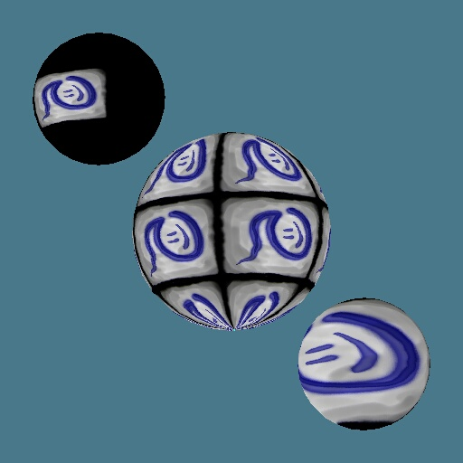

Clamping, Tiling, and Scaling:
A texturemap can be scaled larger or smaller. If it is scaled smaller it can either be repeated over and over again (tiling), or not (clamping).

The first sphere has the texture scaled down and clamped. The area outside of the texture is colored the same as the edge pixels of the texture. Since all pixels around the outside of the texture are black the sphere is black.
The second sphere has the texture tiled.
The third sphere scales the texture up.
copyright 2/14/1999 Vince Scheib